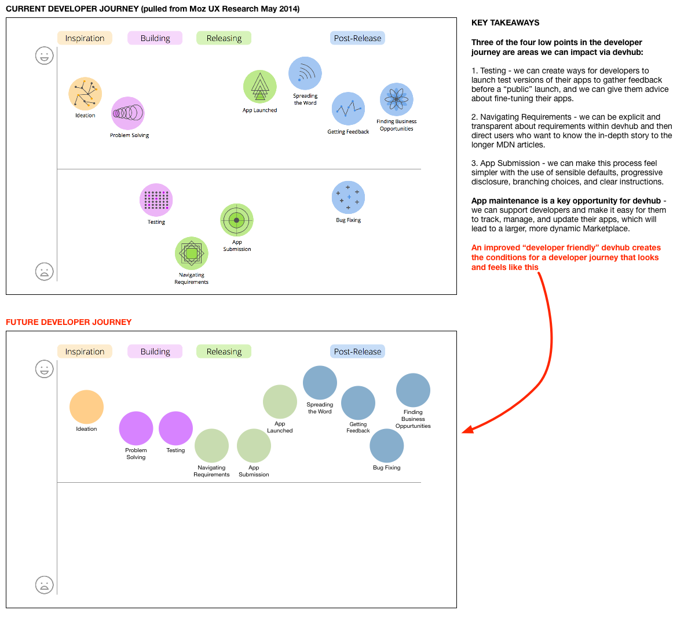

---
layout: MarketplaceUXSpec
multipage: true
multiURL: second_1.html
multisequence: second_1
---	

<div class="container">
	
	<h1>Developer Journey</h1>

	<!-- Pagination. If you have more than one page, set the multipage variable in the Frontmatter to true. Editing the pagination code happens in /_includes/homePagination.html. -->
	{% if page.multipage %}
		{% include secondPagination.html %}
	{% endif %}

	<div class="col-sm-6 col-md-6 col-lg-6 col-lg-offset-1">

		<p class="longText"><br/>With this project, we're focused on a specific low point (app submission) in the existing Developer Journey. We hope to achieve something that looks more like the image at the bottom, where more activities cluster in the "happy" half of the diagram.
		<br/><br/></p>

	</div>

	<div class="row">
		<div class="col-sm-12 col-md-12 col-lg-12">
			<div class="thumbnail">
				
			</div>
		</div>
	</div>
	
	
	
